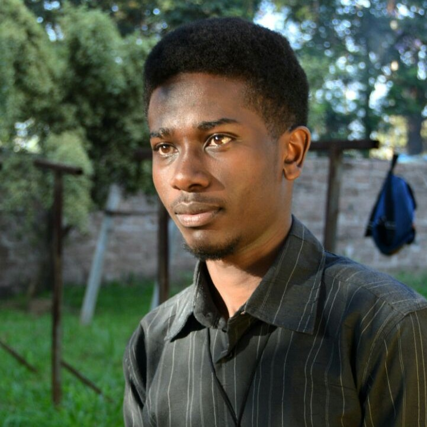

- Contact Details: +254 719 405 599, +254 739 313 938

Besides being a programmer and everything you may have read about me. Something most people dont know is that im a photographer(in association with ess touch) who loves taking people pictures and also loves photos of me being taken too. I started learnig and appreciating photography immideately i was done with high-school. Especially anything to do with close-up shoots.